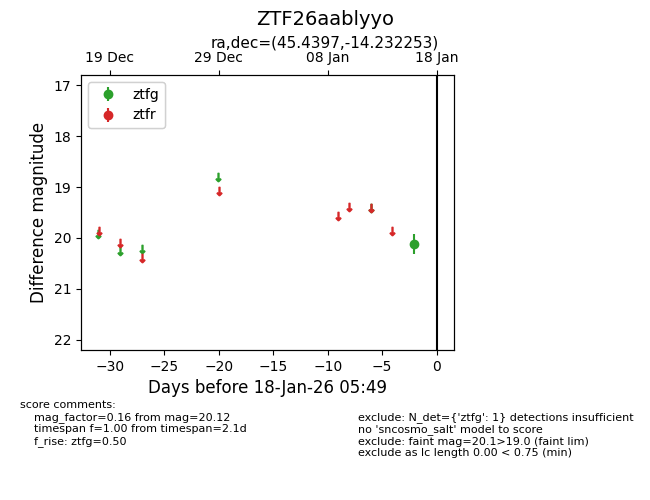
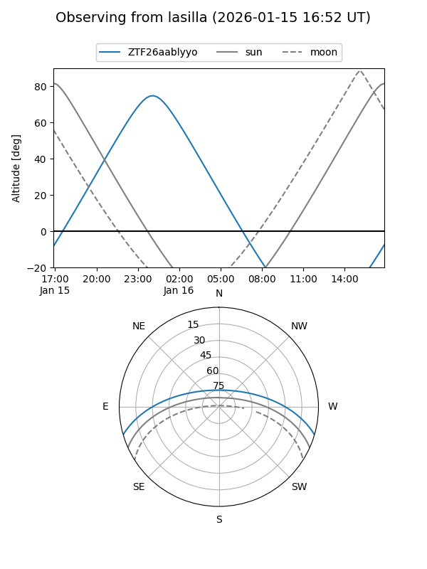
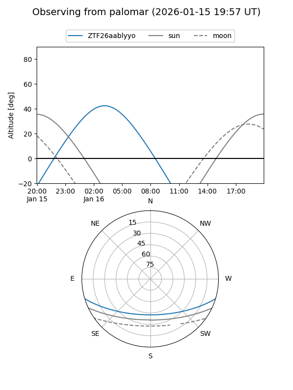

ZTF26aablyyo
Target ZTF26aablyyo at 2026-01-16 05:50
Aliases and brokers:
FINK: link
Lasair: link
ALeRCE: link
alt names
ZTF26aablyyo (ztf,fink_ztf)
Coordinates:
equatorial (ra, dec) = 45.4397,-14.23225
equatorial (HMS+DMS) = 03:01:45.53,-14:13:56.11
galactic (l, b) = (196.5308,-57.03735)
Flags:
Photometry:
last ztfg=20.12
1 ztfg detections
Lightcurve

Visibility


Additional plots